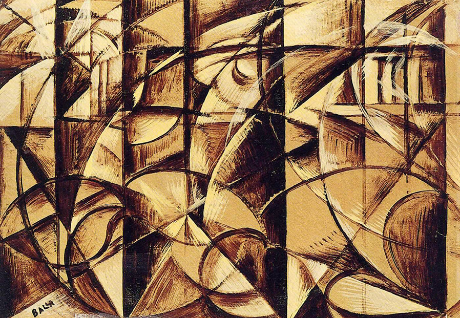
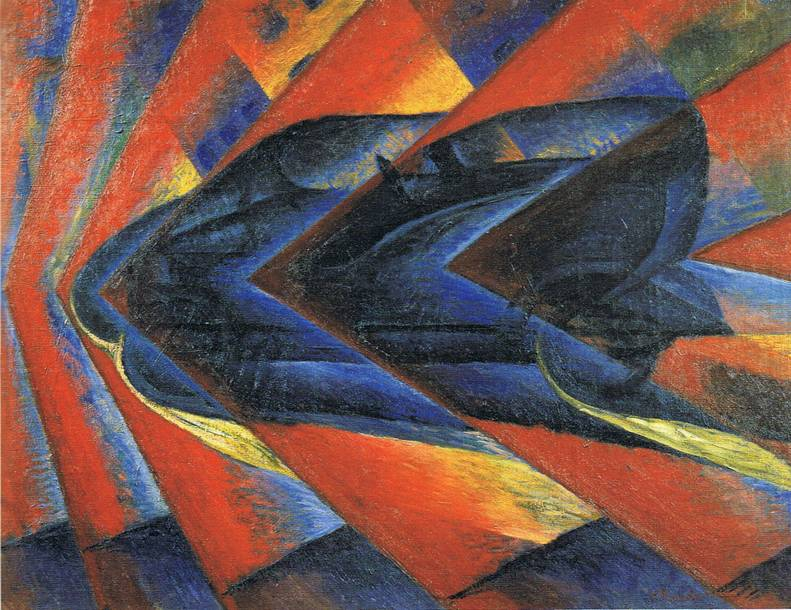

Vanguarda
Movimento formado por grupos de pessoas que, por seus conhecimentos ou por uma tendência natural, exercem papel de precursoras ou de pioneiras em determinado movimento cultural, artístico ou científico.
Futurismo: Inicio(1909)
Principais características
- Desvalorização da tradição e do moralismo;
- Valorização do desenvolvimento industrial e tecnológico;
- Defesa de uma ligação entre as artes plásticas e o mundo moderno;
- Propaganda como principal forma de comunicação;
- Uso de onomatopeias (palavras com sonoridade que imitam ruídos, vozes, sons de objetos) nas poesias;
- Poesias com uso de frases fragmentadas para passar a ideia de velocidade;
- Pinturas com uso de cores vivas e contrastes. Sobreposição de imagens, traços e pequenas deformações para passar a ideia de movimento e dinamismo. Uso da multiplicação de detalhes e linhas.
Futurismo na Itália
Foi em território italiano que o futurismo ganhou grande notoriedade. O fascismo italiano teve grande influência neste movimento artístico na Itália. Os principais artistas plásticos futuristas italianos foram Luigi Russolo, Umberto Boccioni, Giacomo Balla, Gino Severini e Carlo Carrá.
Futurismo na Rússia
O movimento futurista russo recebeu forte influência do socialismo, principalmente após a Revolução Russa de 1917. O grande expoente da poesia futurista russa foi o poeta Vladimir Maiakovski, que fez uma ligação entre a arte e o povo.
Futurismo no Brasil
No Brasil, o futurismo teve grande influência na produção artística de artistas ligados ao movimento modernista. Anita Malfatti e Oswald de Andrade entraram em contato com Marinetti e seu Manifesto Futurista. Muitas ideias e conceitos futuristas foram incorporados às obras destes modernistas brasileiros. Pode-se observar estas influências na Semana de Arte Moderna de 1922.
Questões do enem
Questão 1
Sobre o Futurismo, estão corretas as seguintes alternativas:
I. No Brasil, todas as tendências de vanguarda foram chamadas de Modernismo, que equivale ao Futurismo, para os italianos, e ao Expressionismo, para os alemães.
II. Na literatura brasileira, seus principais representantes foram Manuel Bandeira e Augusto Frederico Schmidt, que se apropriaram de ideais futuristas para a realização de uma escrita automática e telegráfica.
III. O Futurismo difundiu-se por meio de manifestos e conferências, encontrando na literatura seu meio ideal de realização artística.
IV. Entre suas principais características estão a decomposição das figuras em formas geométricas, a não retratação da realidade de forma real (realidade fragmentada), a não utilização da perspectiva e tridimensionalidade e o uso do humor.
a) Todas estão corretas.
b) Apenas I está correta.
c) I e III estão corretas.
d) II e IV estão corretas.
e) II e IV estão corretas.
Questão 2
Algumas obras
O VOO DAS ANDORINHAS (1913)
O VOO DAS ANDORINHAS (1913)
